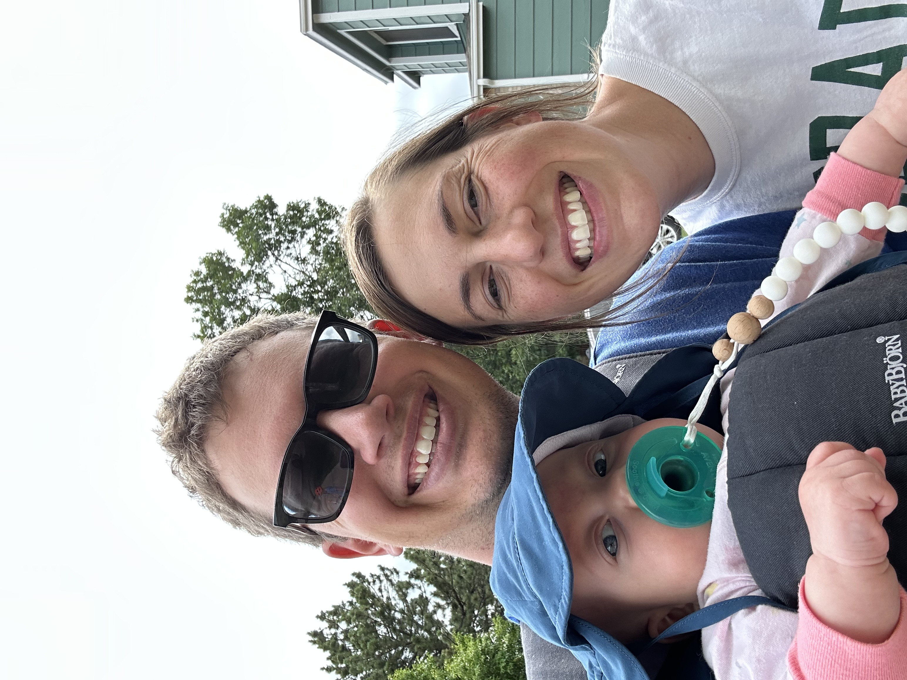
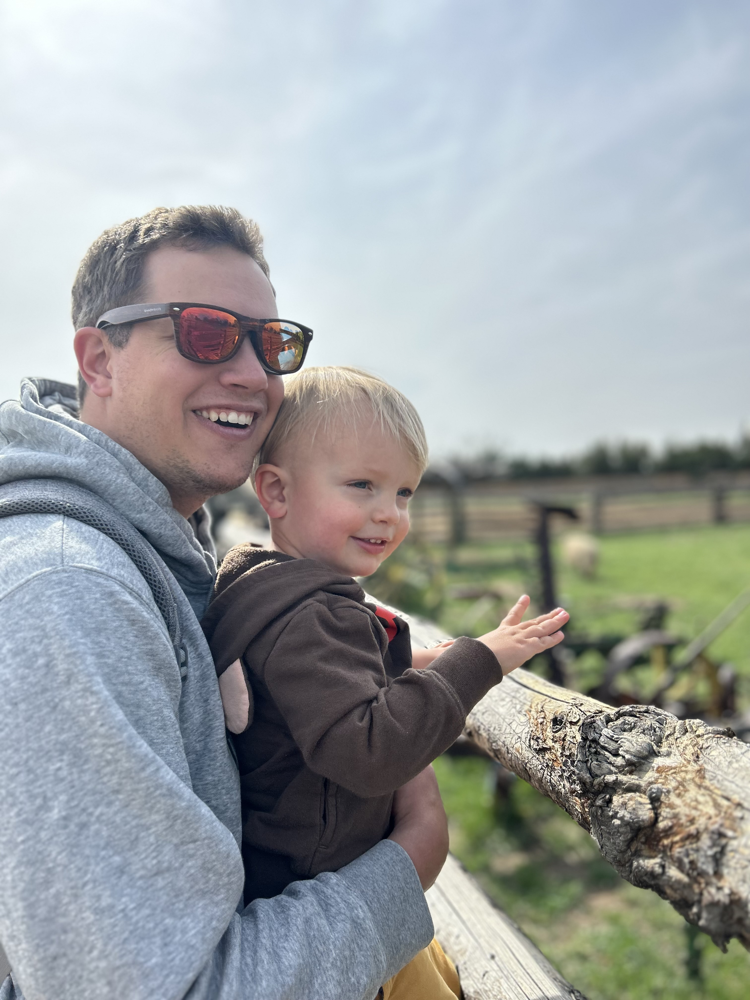

Hey there, I'm Jacob McMonagle, but feel free to call me Mr. McMonagle or just Mr. M. I'm a proud UNC graduate, and I've had the incredible opportunity to teach students from 2nd to 5th grade before diving into my current adventure: teaching middle school for the second year now!
I'm beyond excited about my teaching subjects: CS (Computer Science), Digital Design, and IT Apps. Watching my students unleash their creativity and problem-solving skills is truly rewarding.
Now, let me tell you about some of my other passions outside the classroom. First and foremost, I'm a huge Green Bay Packers fan ‐ game day is practically a holiday for me! And when it's time for snacks, you'll find me munching on Baked Lays and Watermelon Sour Patch Kids ‐ the perfect combo of salty and sweet.
Building things is a big hobby of mine. In fact, I've put together my own computer from scratch! There's something satisfying about understanding how technology works and being able to create something useful.
Being outdoors is where I find my peace. Family hikes, skiing, and snowboarding are some of my favorite activities. And of course, I can't forget our weekly sports night with friends ‐ bonding over friendly competition is the best!
When I'm not exploring the great outdoors or enjoying sports, you can find me engrossed in board and card games. The more complex the rules, the more fun it is for me! I love the challenge and the strategic thinking that comes with these games.
Teaching, technology, sports, and games ‐ that's me, Jacob McMonagle. With an eagerness to inspire and a love for diverse interests, I strive to make a positive impact both in the classroom and beyond. Let's learn and have fun together!
